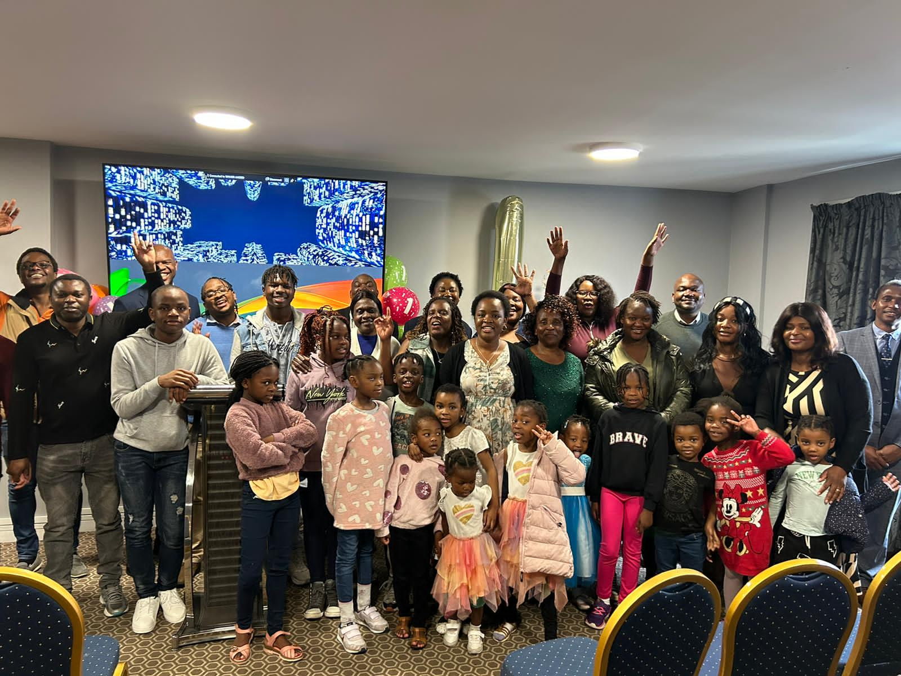
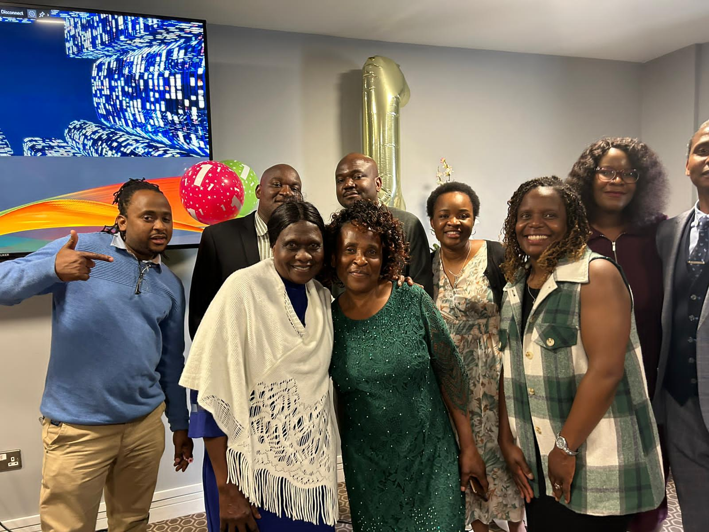

A vibrant Pentecostal community built on faith, family, and the power of the Holy Spirit.

Bliss City Churches is a passionate Pentecostal community located in Portlaoise. We believe in the power of faith, community, and the Holy Spirit. Whether you have been a Christian your whole life or are just exploring your faith, you will find a welcoming home here with us.
Plan Your Visit
Every Sunday in Portlaoise, a family gathers — not because life is easy, but because faith makes it possible.— Bliss City Churches
Welcome to Bliss City Churches! Our leadership team is dedicated to serving the Portlaoise community, sharing the love of Christ, and building a strong, faith-filled spiritual family. We invite you to come and experience God's presence with us.
"For I know the plans I have for you," declares the Lord. — Jeremiah 29:11
Join us for uplifting worship and an inspiring message every Sunday morning from 10:00 AM to 1:00 PM.
A fun, safe, and engaging environment for kids to learn about God, running from 11:00 AM to 12:00 PM.
Our ladies hold regular prayer meetings to seek God together, intercede, and build strong fellowship.
Join us for a special evening of extended worship and prayer. Everyone is welcome!
Celebrate the birth of Jesus with our church family. Expect carols, a special message, and fellowship.
More upcoming events will be announced soon. Check our Facebook page for regular updates!
Today’s Encouragement
“Your word is a lamp for my feet, a light on my path.”
— Psalm 119:105
We send out powerful daily devotionals every morning to start your day with faith. Join our WhatsApp group to receive them directly on your phone!
Get Daily DevotionalsMain Sunday Service: 10:00 AM – 1:00 PM
Children’s Church: 11:00 AM – 12:00 PM